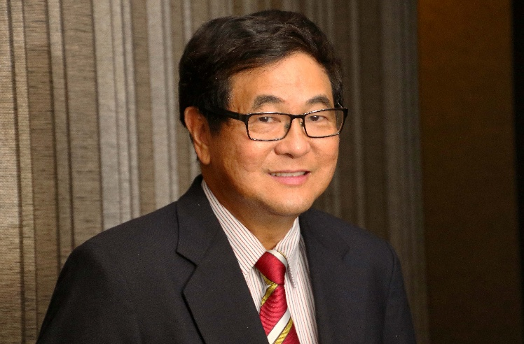

Background of Dr Mike Teng

DBA (AU), MBA (NUS), BEng (NUS), FCMI, FCIM, FMIS, FIMechE, FIET, PEng (S), CEng, SMSCS, RMC, ACTA
Dr. Mike Teng is a renowned turnaround expert and the author of the best-selling book “Corporate Turnaround: Nursing a Sick Company Back to Health.” His work is highly regarded in the global business community, receiving prestigious endorsements from management guru Professor Philip Kotler and prominent business leaders Mr. Oei Hong Leong and Dr. YY Wong.
With a bibliography of more than twenty-five titles, Dr. Teng is a leading voice on corporate transformation, productivity, and innovation. His insights are frequently sought after by the national press and regional broadcasters. Notably, he was featured in The Straits Times as the “Man Who Turns Red into Black,” labeled a “Turnaround Manager” by World Executive’s Digest, and recognized as a “Marketing Maven” by Singapore Marketer.
Dr. Teng brings over 40 years of experience in leading corporate and business model transformations across the Asia Pacific region. For 25 of those years, he served as Chief Executive Officer who successfully turned around and transformed various multi-national corporations, publicly listed companies, and SMEs. Beyond his executive roles, he has served as a strategic advisor to several Boards of Directors of listed companies and provided high-level management consultancy services across Southeast Asia, China, and Africa.
A dedicated leader in the professional community, Dr. Teng served on the Executive Council of the Marketing Institute of Singapore for fourteen years, including four years as President. He is also the Past President of the NUS MBA Alumni and past Chairman of the Chartered Management Institute (Singapore Branch).
Dr. Teng holds a Doctor in Business Administration (DBA) from Adelaide University, as well as an MBA and Bachelor in Mechanical Engineering (BEng) from the National University of Singapore. He is a registered Professional Engineer (P Eng, Singapore) and Chartered Engineer (C Eng, UK). He is a Fellow of several prestigious institutions, including:
He is also a Registered Management Consultant (RMC) and holds an ACTA certification recognized by the Singapore government.
As a retired CEO and expert corporate turnaround consultant, Dr. Teng’s current mission is to democratize elite business expertise through Artificial Intelligence. He develops AI-driven platforms, such as www.corporateturnaroundcentre.com, which feature 19 specialized AI applications. These tools are designed to guide companies through his proven methodology—encompassing surgery, resuscitation, and therapy—to find both secular and spiritual solutions for their most pressing corporate challenges.
Chinese Biography
邓博士（Dr Mike Teng）于 2002 年出版了另一部畅销书《企业扭转：让病危企业起死回生》。该书获得管理学大师菲利普·科特勒教授（Professor Philip Kotler）以及企业巨擘黄鸿年先生（Mr Oei Hong Leong）和黄源源博士（Dr YY Wong）的推荐。他至今已撰写超过二十七本管理类书籍，主要涵盖企业扭转、转型、并购、生产力与创新等主题。
他曾被新加坡国家级报章《海峡时报》于 1996 年 3 月 16 日报道为"让亏损企业起死回生的人"。在 1997 年 10 月的《World Executive's Digest》中，他被誉为"企业扭转经理"；在 2009 年的《Singapore Marketer》中，他则被称为"营销大师"（Marketing Maven）。
他在亚太地区领导企业与商业模式转型方面拥有超过四十年的经验。其中，他在跨国公司、上市公司以及中小型企业担任首席执行官长达二十五年。他也曾为多家上市公司的董事会提供咨询，并在东南亚、中国和非洲提供高层管理顾问服务。
邓博士曾在新加坡市场营销学院（Marketing Institute of Singapore，国家级营销协会）担任执行理事会成员长达十四年，并在最后四年出任会长。他亦曾担任新加坡国立大学 MBA 校友会会长，以及英国特许管理协会（Chartered Management Institute）新加坡分会的前任会长与前任主席。
邓博士拥有阿德莱德大学（Adelaide University）的工商管理博士（DBA）学位，以及新加坡国立大学的工商管理硕士（MBA）和机械工程学士（BEng）学位。他同时是新加坡注册专业工程师（P Eng, Singapore）、英国特许工程师（C Eng, UK），并是多家国际知名专业机构的资深会员，包括：英国特许市场营销协会（FCIM）、英国特许管理协会（FCMI）、英国机械工程师学会（FIMechE）、新加坡市场营销学院（FMIS）、英国电机工程师学会（FIEE）以及新加坡电脑学会高级会员（SMSCS）。此外，他也是新加坡政府认可的管理顾问（RMC）及高级培训与评估证书（ACTA）持有者。
作为退休的首席执行官与企业扭转专家，邓博士现今的使命是通过人工智能普及顶尖商业智慧。他打造了 AI 平台 www.corporateturnaroundcentre.com，内含 19 个 AI 应用程序，引导企业从世俗与属灵两个层面寻找解决最紧迫企业挑战的方法。
祝您事业蒸蒸日上 邓耀兴博士（Er Dr Mike Teng） 董事总经理 Corporate Turnaround Centre Pte Ltd admin@corporateturnaroundcentre.com